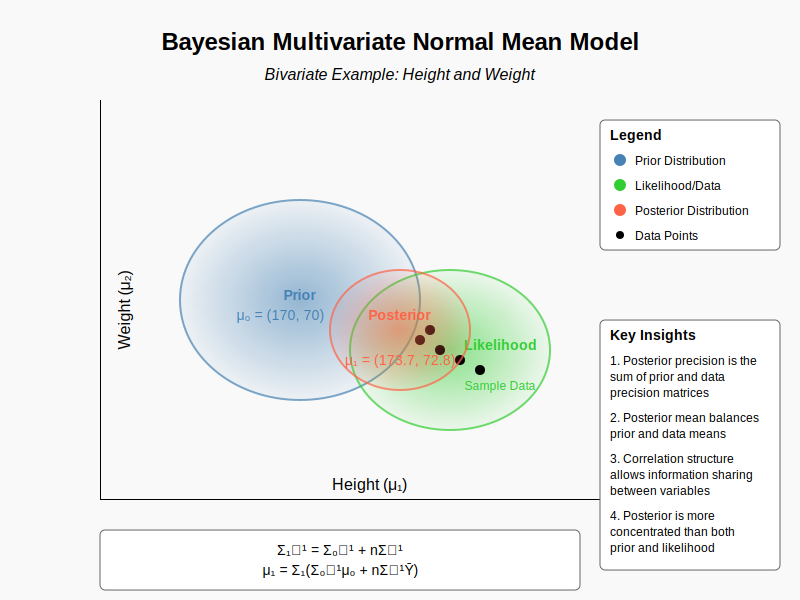

Bayesian Multivariate Normal Mean Model¶
The Bayesian multivariate normal mean model extends the univariate case by accounting for relationships between multiple parameters, allowing information from one variable to influence our beliefs about others through their correlation structure, which results in more precise posterior estimates than if we had treated each parameter independently.
Graphical Summary¶

Key Formula¶
The posterior distribution of the bivariate normal model is still multivariate normal, where the posterior precision matrix is the sum of the prior precision and the likelihood precision, and the posterior mean is a precision-weighted average of the prior mean and the observed data.
where:
and:
Technical Details¶
Model Assumptions¶
In the Bayesian normal mean model, we assume the variables \(Y_1\) and \(Y_2\) follow a bivariate normal model:
where:
\(\mu_1\) and \(\mu_2\) are the unknown mean parameters.
\(\sigma_1^2\) and \(\sigma_2^2\) are the known variances.
\(\rho\) is the correlation between the two variables.
The Bayesian Normal Mean Model aims to infer what we can learn about the unknown parameters \(\mu_1\) and \(\mu_2\).
Prior Distribution¶
A common choice for the prior on \(\mu_1\) and \(\mu_2\) is a bivariate normal distribution:
where $\( \boldsymbol{\Sigma}_0 = \begin{pmatrix} \sigma_{1,0}^2 & \rho_0 \sigma_{1,0} \sigma_{2,0} \\ \rho_0 \sigma_{1,0} \sigma_{2,0} & \sigma_{2,0}^2 \end{pmatrix} \)$
where \(\mu_{10}\) and \(\mu_{20}\) are the prior means, and \(\sigma_{1,0}^2\) and \(\sigma_{2,0}^2\) are the prior variances, with \(\rho_0\) being the prior correlation.
\(\boldsymbol{\Sigma}\) is called covariance matrix or variance-covariance matrix.
The precision matrix is defined as:
where \(\tau_{1,0} = \frac{1}{\sigma_{1,0}^2}\) and \(\tau_{2,0} = \frac{1}{\sigma_{2,0}^2}\).
Likelihood¶
The likelihood of the data given \(\mu_1\), \(\mu_2\), \(\sigma_1^2\), \(\sigma_2^2\), and \(\rho\) is:
The probability density function (PDF) is:
where \(\boldsymbol{\mu} = \begin{pmatrix} \mu_1 \\ \mu_2 \end{pmatrix}\) and \(\boldsymbol{\Sigma}\) is the covariance matrix:
Posterior Distribution¶
Using Bayes’ theorem, the posterior distribution of \(\mu_1\) and \(\mu_2\) is:
Expanding the probability density functions:
Recognizing the quadratic form, the posterior distribution follows a bivariate normal distribution:
where:
and:
Example¶
In this document, we explore the bivariate Bayesian normal mean model using height (\(Y_1\)) and weight (\(Y_2\)) as our two correlated variables. Unlike the univariate case where we estimate a single mean parameter, here we simultaneously estimate the means of two related variables while accounting for their correlation structure.
We assume that these measurements follow a bivariate normal distribution:
where:
\(\mathbf{Y} = (Y_1, Y_2)^T\) is the vector of height and weight
\(\boldsymbol{\mu} = (\mu_1, \mu_2)^T\) is the unknown mean vector
\(\boldsymbol{\Sigma}\) is the known covariance matrix
Our goal is to estimate \(\boldsymbol{\mu}\) using Bayesian inference.
# Clear the environment
rm(list = ls())
# Load necessary libraries
library(MASS) # For mvrnorm function
library(ggplot2)
library(ellipse)
library(mvtnorm)
Prior Distribution¶
We assume a bivariate normal prior for \(\boldsymbol{\mu}\):
where:
\(\boldsymbol{\mu}_0 = (170, 70)^T\) cm and kg (prior mean for height and weight)
\(\boldsymbol{\Sigma}_0\) is the prior covariance matrix
# Prior distribution parameters
mu_0 <- c(170, 70) # Prior mean vector [height in cm, weight in kg]
Sigma_0 <- matrix(c(25, 15, 15, 36), nrow = 2) # Prior covariance matrix
Precision_0 <- solve(Sigma_0) # Prior precision matrix
# Display prior parameters
cat("Prior mean vector (mu_0):\n")
print(mu_0)
cat("\nPrior covariance matrix (Sigma_0):\n")
print(Sigma_0)
cat("\nPrior precision matrix (Precision_0):\n")
print(Precision_0)
Prior mean vector (mu_0):
[1] 170 70
Prior covariance matrix (Sigma_0):
[,1] [,2]
[1,] 25 15
[2,] 15 36
Prior precision matrix (Precision_0):
[,1] [,2]
[1,] 0.05333333 -0.02222222
[2,] -0.02222222 0.03703704
Observed Data and Likelihood Function¶
We observe height and weight measurements for five individuals, and we assume the likelihood follows:
# Observed data: height and weight measurements for 5 individuals
# Format: matrix with each row representing an individual's [height, weight]
Y_raw <- matrix(c(
175, 75, # Individual 1
168, 68, # Individual 2
182, 80, # Individual 3
165, 63, # Individual 4
178, 78 # Individual 5
), ncol = 2, byrow = TRUE)
N <- nrow(Y_raw) # Number of observations
colnames(Y_raw) <- c("Height", "Weight")
# Display the data
cat("Observed data (height in cm, weight in kg):\n")
print(Y_raw)
cat("\nNumber of observations:", N, "\n")
# Calculate sample mean
Y_bar <- colMeans(Y_raw)
cat("\nSample mean vector:\n")
print(Y_bar)
# Set the known covariance matrix for the likelihood
Sigma <- matrix(c(16, 12, 12, 25), nrow = 2) # Known covariance matrix
Precision <- solve(Sigma) # Precision matrix
cat("\nLikelihood covariance matrix (Sigma):\n")
print(Sigma)
cat("\nLikelihood precision matrix (Precision):\n")
print(Precision)
Observed data (height in cm, weight in kg):
Height Weight
[1,] 175 75
[2,] 168 68
[3,] 182 80
[4,] 165 63
[5,] 178 78
Number of observations: 5
Sample mean vector:
Height Weight
173.6 72.8
Likelihood covariance matrix (Sigma):
[,1] [,2]
[1,] 16 12
[2,] 12 25
Likelihood precision matrix (Precision):
[,1] [,2]
[1,] 0.09765625 -0.046875
[2,] -0.04687500 0.062500
Posterior Distribution Update¶
Using Bayesian updating for the multivariate normal, the posterior distribution is given by:
where:
Posterior precision matrix: \(\boldsymbol{\Sigma}_1^{-1} = \boldsymbol{\Sigma}_0^{-1} + n \boldsymbol{\Sigma}^{-1}\)
Posterior mean vector: \(\boldsymbol{\mu}_1 = \boldsymbol{\Sigma}_1 (\boldsymbol{\Sigma}_0^{-1} \boldsymbol{\mu}_0 + n \boldsymbol{\Sigma}^{-1} \bar{\mathbf{Y}})\)
where \(\bar{\mathbf{Y}}\) is the sample mean vector.
Precision_1 <- Precision_0 + N * Precision # Posterior precision matrix
Sigma_1 <- solve(Precision_1) # Posterior covariance matrix
# Posterior mean calculation
mu_1 <- Sigma_1 %*% (Precision_0 %*% mu_0 + N * Precision %*% Y_bar)
cat("Posterior mean vector (mu_1):\n")
print(mu_1)
cat("\nPosterior covariance matrix (Sigma_1):\n")
print(Sigma_1)
cat("\nPosterior precision matrix (Precision_1):\n")
print(Precision_1)
Posterior mean vector (mu_1):
[,1]
[1,] 173.18335
[2,] 72.42632
Posterior covariance matrix (Sigma_1):
[,1] [,2]
[1,] 2.830896 2.078178
[2,] 2.078178 4.386530
Posterior precision matrix (Precision_1):
[,1] [,2]
[1,] 0.5416146 -0.2565972
[2,] -0.2565972 0.3495370
Visualizing Prior and Posterior Distributions¶
We’ll visualize both the prior and posterior bivariate normal distributions, along with the observed data points.
# Create grid for plotting
grid_points <- 100
x_range <- seq(min(Y_raw[,1], mu_0[1], mu_1[1]) - 15,
max(Y_raw[,1], mu_0[1], mu_1[1]) + 15, length.out = grid_points)
y_range <- seq(min(Y_raw[,2], mu_0[2], mu_1[2]) - 15,
max(Y_raw[,2], mu_0[2], mu_1[2]) + 15, length.out = grid_points)
grid <- expand.grid(x_range, y_range)
colnames(grid) <- c("x", "y")
# Function to calculate bivariate normal density
bvn_density <- function(x, y, mu, Sigma) {
xy <- matrix(c(x, y), ncol = 2)
z <- dmvnorm(xy, mu, Sigma)
return(z)
}
# Calculate densities for prior and posterior
grid$prior_density <- bvn_density(grid$x, grid$y, mu_0, Sigma_0)
grid$posterior_density <- bvn_density(grid$x, grid$y, mu_1, Sigma_1)
# Create contour plot
plot(Y_raw, xlim = range(x_range), ylim = range(y_range),
xlab = "Height (cm)", ylab = "Weight (kg)",
main = "Prior and Posterior Distributions with Observed Data",
pch = 16, col = "black", cex = 1.5)
# Add contours for prior (blue) and posterior (red)
contour(x_range, y_range,
matrix(grid$prior_density, nrow = grid_points, ncol = grid_points),
add = TRUE, col = "blue", lwd = 2)
contour(x_range, y_range,
matrix(grid$posterior_density, nrow = grid_points, ncol = grid_points),
add = TRUE, col = "red", lwd = 2)
# Add confidence ellipses
lines(ellipse(Sigma_0, centre = mu_0), col = "blue", lwd = 2)
lines(ellipse(Sigma_1, centre = mu_1), col = "red", lwd = 2)
# Add means
points(mu_0[1], mu_0[2], pch = "+", col = "blue", cex = 2, lwd = 2)
points(mu_1[1], mu_1[2], pch = "+", col = "red", cex = 2, lwd = 2)
# Add legend
legend("topright",
legend = c("Prior Mean", "Posterior Mean", "Prior Distribution",
"Posterior Distribution", "Observed Data"),
col = c("blue", "red", "blue", "red", "black"),
pch = c("+", "+", NA, NA, 16),
lty = c(NA, NA, 1, 1, NA),
lwd = c(2, 2, 2, 2, NA),
cex = 0.8)
{kind=link}
3D Visualization of Prior and Posterior Distributions¶
Let’s also create 3D plots to better visualize the bivariate normal distributions.
z_prior <- matrix(grid$prior_density, nrow = grid_points, ncol = grid_points)
z_posterior <- matrix(grid$posterior_density, nrow = grid_points, ncol = grid_points)
# Set up the plotting area for two 3D plots
par(mfrow = c(2, 1), mar = c(1, 1, 2, 1))
# Prior distribution 3D plot
persp(x_range, y_range, z_prior,
theta = 30, phi = 20, expand = 0.6, col = "lightblue",
ticktype = "detailed", xlab = "Height (cm)", ylab = "Weight (kg)",
zlab = "Density", main = "Prior Distribution")
# Posterior distribution 3D plot
persp(x_range, y_range, z_posterior,
theta = 30, phi = 20, expand = 0.6, col = "lightpink",
ticktype = "detailed", xlab = "Height (cm)", ylab = "Weight (kg)",
zlab = "Density", main = "Posterior Distribution")
{kind=link}
In this example, we’ve demonstrated Bayesian inference for a bivariate normal mean model, using height and weight as the two variables. We specified a bivariate normal prior, observed data from five individuals, and updated our beliefs to obtain the posterior distribution.
The key differences from the univariate case are:
We work with vectors and matrices instead of scalars
The covariance matrix captures the relationship between height and weight
The posterior update formulas involve matrix operations
Visualization becomes more complex, requiring 2D contours or 3D surfaces
We’ve seen how the posterior distribution balances the prior beliefs with the observed data, resulting in updated estimates for the mean height and weight that reflect both our prior knowledge and the new information from our sample.